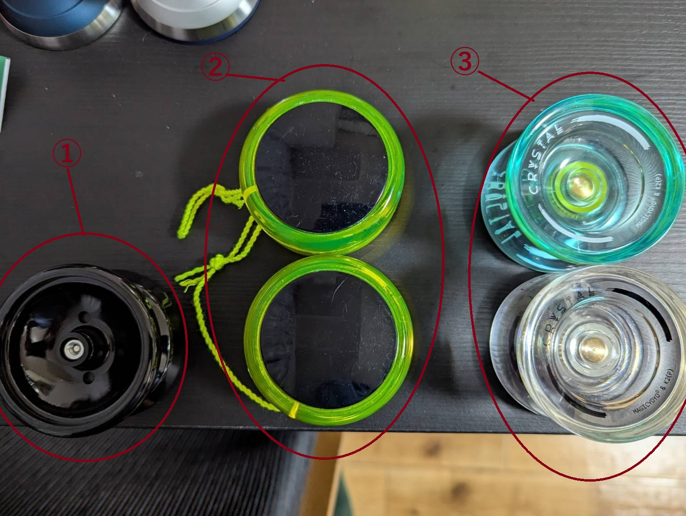
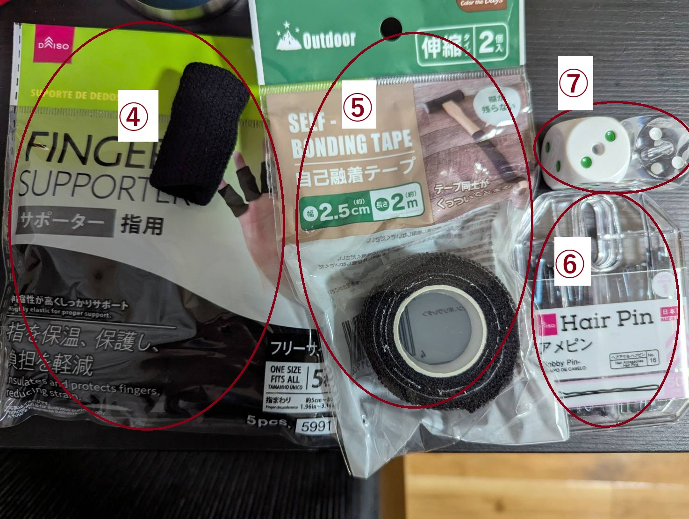

① スピンガジェット(キャップなし)
メーカー：スピンギア
がにゅにもあげたもの。金属製ベアリングではなくいわゆるプラベアリングと呼ばれるものが入っています。
一般的には引っ張ったら手元に戻る「引き戻し」の「ストリングトリック」（≒1A）用とされています。ループ・ザ・ループなどのルーピングトリックも可能ですが、慣れないと難しく、上手い人でもきれいにはかなりしにくいです。
② 旧型ステップ1(多分)
メーカー：スピンギア
正体不明ですが多分ステップ1の旧モデルの部品を交換したものっぽいです。ベアリングを挟んでるスペーサーがおそらくちょっといいやつ。
金属ベアリングでおおよそハイパーヨーヨーのハイパーレイダーやストームタイガーと中身の構造がほぼ同じです。
完全に引き戻しで「ルーピングトリック」（≒2A）用です。ループ・ザ・ループなどはやりやすいですが、基本的にストリングトリックはかなり難しいです。
ベアリングのオイルが切れると戻りが悪くなります。
ルーピングヨーヨー用の粘度高めのオイルを軸とベアリングの隙間に差し込むか、最悪ダイソーのミシンオイルでもギリギリなんとかなります。
③ クリスタル
メーカー：マジックヨーヨー
引いても戻ってこない機種で、今主流の1Aで使用されるタイプです。バインド機などと呼ばれ、手元に戻すのにバインドと呼ばれる技の習得が必要です。慣れると数分単位で回すことができます。

④ 指サポーター1
ダイソーなどで購入。ストリングが指に食い込んで痛いときに使います。中指にこれをはめて、その上からヨーヨーの糸をつけます。
⑤ 指サポーター2
確かセリアの製品。キャンプ用品売場に売っていて、ハンマーの柄の部分に使う粘つかないテープです。切って指に巻き、痛くないようにします。
⑥ アメピン
ヨーヨーの糸が絡まったときに使います。毎回分解するとネジの固定が弱くなるため、ストリングトリック用の場合はこれで絡まりを解きます。
その他
糸が10本ほど。ナイロン100%のKittyストリングです。
スタンド。ヨーヨーを飾れます。